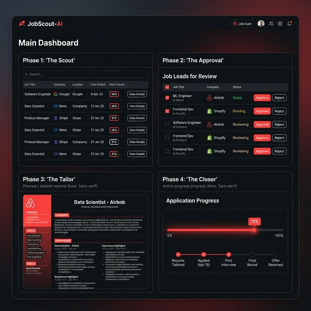

The job search process today is often overwhelming—hundreds of applications, countless versions of resumes, and endless scrolling. JobScout-AI is my solution to this problem: an end-to-end, AI-powered workflow designed to automate the most tedious parts of searching for a job while maintaining a high standard of quality.

The Problem: Quality vs. Quantity
Applying to jobs at scale usually means sacrificing the quality of the application. However, tailored resumes have a much higher success rate. JobScout-AI bridges this gap by using autonomous agents to scout, filter, and adaptively tailor applications for each specific role.
Detailed System Architecture
The core of JobScout-AI is divided into four distinct phases, each powered by a specialized tech stack.
How It Works
1. The Scout: Using Playwright with stealth plugins, the engine scrapes LinkedIn for high-value leads based on your specific criteria, bypassing bot detection.
2. The Approval: A Streamlit dashboard allows for human-in-the-loop verification. You approved the most promising leads with a single click.
3. The Tailor: This is where the magic happens. LangChain analyzes the job description, detects the industry context, and "surgically injects" relevant components from your master resume template using GPT-4o-mini.
4. The Closer: The engine automates the application process, handling "Easy Apply" roles instantly and providing a browser session for external applications.
Conclusion
JobScout-AI isn't just a tool; it's a paradigm shift in how we approach the job market. By automating the mechanical tasks, it allows candidates to focus on what really matters: preparing for interviews and finding the right culture fit.
Back to Portfolio